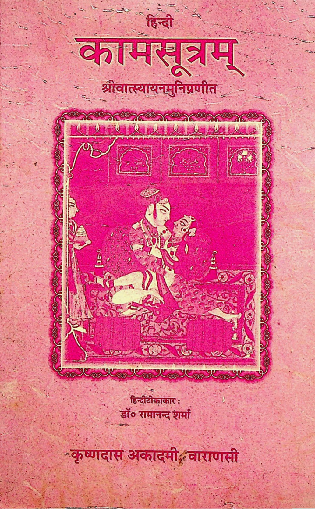
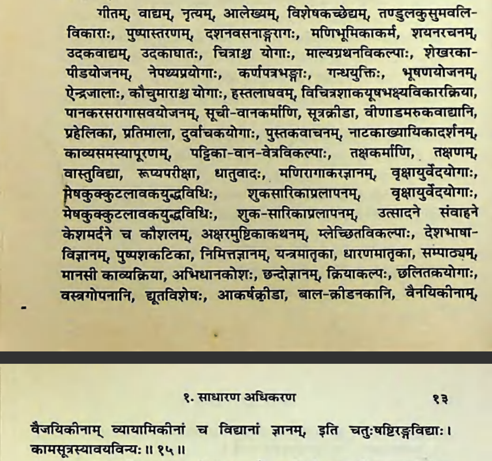

Sanskrit text taken from Hindi Kāmasūtram published by Krishnadas Academy, Varanasi, 2001, page 12-13.
Translated by me with the help of Monier-Williams Sanskrit Dictionary (1899) and Apte’s Practical Sanskrit-English Dictionary (1957).
I wasn’t sure of some words and marked them with question marks. Feel free to leave comments if you have any suggestions or insights.


1. गीतम् (gītam) - singing
गीत (gīta): n. singing, song
2. वाद्यम् (vādyam) - playing musical instruments
वाद्य (vādya): n. a musical instrument
3. नृत्यम् (nṛtyam) - dancing
नृत्य (nṛtya): n. dancing, acting
4. आलेख्यम् (ālekhyam) - painting
आलेख्य (ālekhya): n. writing, painting
5. विशेषकच्छेद्यम् (viśeṣakacchedyam) - cutting [?] marks on the forehead
विशेषकच्छेद्य (viśeṣaka-cchedya)
- विशेषक (viśeṣaka): n. a mark on the forehead
- च्छेद्य (cchedya): [?] √छिद् (√chid): [7U] to cut, split, pierce
6. तण्डुलकुसुमवलिविकाराः (taṇḍulakusumavalivikārāḥ) - scattering rice and flower ointment line on a person (Rangoli?)
तण्डुलकुसुमवलिविकारा (taṇḍula-kusuma-vali-vikārā)
- तण्डुल (taṇḍula): m. grain (after threshing and winnowing), esp. rice
- कुसुम (kusuma): n. a flower, blossom
- लि (vali): m. a line or stroke made with fragrant unguents on the person
- विकारा (vikārā): f. scatter
- वि-√कॄ (vi-√kṝ): [6P] to scatter, throw or toss about, disperse
- वि- (vi-): [prefix] separation, disjunction
- √कॄ (√kṝ): [6P] to pour out, scatter, throw, cast, disperse
- वि-√कॄ (vi-√kṝ): [6P] to scatter, throw or toss about, disperse
7. पुष्पास्तरणम् (puṣpāstaraṇam) - making flower carpets
पुष्पास्तरण (puṣpa-āstaraṇa)
- पुष्प (puṣpa): n. a flower, blossom
- आस्तरण (āstaraṇa): n. a carpet, rug; a cushion, quilt, bed-clothes
- आ-√स्तृ (ā-√stṛ): [5/9U] to scatter over, cover, bestrew, spread
- आ- (ā-): [prefix] in, at, on
- √स्तृ (√stṛ): [5U] to spread, strew, cover, spread on or over
- आ-√स्तृ (ā-√stṛ): [5/9U] to scatter over, cover, bestrew, spread
8. दशनवसनाङ्गरागः (daśanavasanāṅgarāgaḥ) - dyeing teeth, clothes, and the body
दशनवसनाङ्गराग (daśana-vasana-aṅga-rāga)
- दशन (daśana): m. a tooth
- दंश् (√daṃś): [1Ā] to bite
- वसन (vasana): n. cloth, clothes, dress, garment, apparel, attire
- अङ्ग (aṅga): n. a limb of the body; a limb, member; the body
- राग (rāga): m. the act of colouring or dyeing; colour, hue, tint, dye, (esp.) red colour, redness
9. मणिभूमिकाकर्म (maṇibhūmikākarma) - making gemmed floor
मणि-भूमिका-कर्मन् (maṇi-bhūmikā-karman)
- मणि (maṇi): m. a jewel, gem, pearl (also fig.), any ornament or amulet, globule, crystal
- भूमिका (bhūmikā): f. earth, ground, soil; a spot, place for; a story, floor
- कर्मन् (karman): n. act, action, performance, business
- √कृ (√kṛ): [8U] to do, make, perform
10. शयनरचनम् (śayanaracanam) - making bed
शयनरचन (śayana-racana)
- शयन (śáyana): n. a bed, couch, sleeping-place
- √शी (√śī): [2Ā] to lie, lie down, recline, rest, repose
- रचन (racana): n. the act of making, forming, arranging, preparing, composing
- √रच् (√rac): [10P] to produce, fashion, form, make, construct, complete, cause, effect
11. उदकवाद्यम् (udakavādyam) - playing water instruments
उदकवाद्य (udaka-vādya)
- उदक (udaka): n. water
- वाद्य (vādya): m. a musical instrument
12. उदकाघातः (udakāghātaḥ) - water striking
उदकाघात (udaka-āghāta)
- उदक (udaka): n. water
- आघात (ā-ghāta): striking; a stroke, blow with or on
- आ-√हन् (ā-√han): [2P] to strike at, hit, beat; to attack, assault
- आ- (ā-): [prefix] in, at, on
- √हन् (√han): [2P] to strike, beat
- आ-√हन् (ā-√han): [2P] to strike at, hit, beat; to attack, assault
13. चित्राश्च योगाः (citrāśca yogāḥ) - various yogas
चित्र च योग (citra ca yoga)
- चित्र (citra): mfn. various, different, manifold
- च (ca): [?] not sure why “ca” is here, but sandhi suggests so
- योग (yoga): m. yoga
- √युज् (√yuj): [7U] to use, employ, apply
14. माल्यग्रथनविकल्पाः (mālyagrathanavikalpāḥ) - binding variaion of wreath
माल्यग्रथनविकल्प (mālya-grathana-vikalpa)
- माल्य (mālya): n. a wreath, garland, chaplet
- ग्रथन (grathana): n. tying, binding-stringing together
- √ग्रथ् (√grath): [9P] to fasten, tie or string together, arrange
- विकल्प (vikalpa): m. variation, combination, variety, diversity, manifoldness
- वि-√कॢप् (vi-√kḷp): [1Ā] to change or alternate, change with
- वि- (vi-): [prefix] separation, disjunction
- √कॢप् (√kḷp): [1Ā] to prepare, arrange
- वि-√कॢप् (vi-√kḷp): [1Ā] to change or alternate, change with
15. शेखरकापीडयोजनम् (śekharakāpīḍayojanam) - putting garlands on the head
शेखरकापीडयोजन (śekharaka-āpīḍa-yojana)
- शेखरक (śekharaka) -> शेखर (śekhara): m. the top or crown of the head
- आपीड (āpīḍa): m. a chaplet (tied on the crown of the head) garland in general
- आ-√पीड् (ā-√pīḍ): [10P] to press against or out; to press, crush
- आ- (ā-): [prefix] in, at, on
- √पीड् (√pīḍ): [10P] to press or squeeze
- आ-√पीड् (ā-√pīḍ): [10P] to press against or out; to press, crush
- योजन (yojana): n. use, application, arrangement, preparation
- √युज् (√yuj): [7U] to use, employ, apply
16. नेपथ्यप्रयोगाः (nepathyaprayogāḥ) - dressing costumes
नेपथ्यप्रयोग (nepathya-prayoga)
- नेपथ्य (nepathya): n. an ornament, decoration, costume
- प्रयोग (prayoga): m. application, employment
- प्र-√युज् (pra-√yuj): [7U] to use, employ
- प्र- (pra-): [prefix] forward, forth, in front, onward
- √युज् (√yuj): [7U] to use, employ, apply
- प्र-√युज् (pra-√yuj): [7U] to use, employ
17. कर्णपत्रभङ्गाः (karṇapatrabhaṅgāḥ) - breaking ear leaves (earlobe piercing?)
कर्णपत्रभङ्ग (karṇa-patra-bhaṅga)
- कर्ण (karṇa): m. the ear
- पत्र (patra) -> पात्त्र (pattra): n. a leaf, petal (regarded as the plumage of a tree or flower)
- भङ्ग (bhaṅga) : m. breaking, splitting, dividing, shattering, breaking down or up
- √भञ्ज् (√bhañj): [7P] to break, shatter, split
18. गन्धयुक्तिः (gandhayuktiḥ) - combining perfume
गन्धयुक्ति (gandha-yukti)
- गन्ध (gandha): m. a fragrant substance, fragrance, scent, perfume
- युक्ति (yukti): f. union, junction, connection, combination
- √युज् (√yuj): [7U] to join, unite, attach, connect, add
19. भूषणयोजनम् (bhūṣaṇayojanam) - applying ornament
भूषणयोजन (bhūṣaṇa-yojana)
- भूषण (bhūṣaṇa): n. embellishment, ornament, decoration
- योजन (yojana): n. use, application, arrangement, preparation
- √युज् (√yuj): [7U] to use, employ, apply
20. ऐन्द्रजालाः (aindrajālāḥ) - magic
ऐन्द्रजाल (aindra-jāla)
- ऐन्द्र (aindra): mfn. belonging to or sacred to Indra, coming or proceeding from Indra, similar to Indra
- जाल (jāla): n. a net
“Indra’s net is an infinitely large net owned by the Vedic deva Indra, which hangs over his palace on Mount Meru, the axis mundi of Buddhist and Hindu cosmology.” — Wikipedia
21. कौचुमाराश्च योगाः (kaucumārāśca yogāḥ) - a particular art [?]
कौचुमार च योग (kaucumāra ca yoga)
- कौचुमार (kaucumāra): a particular art
- च (ca): [?] not sure why “ca” is here, but sandhi suggests so
- योग (yoga): m. yoga
- √युज् (√yuj): [7U] to use, employ, apply
22. हस्तलाघवम् (hastalāghavam) - hand swiftness
हस्तलाघव (hasta-lāghava)
- हस्त (hasta): m. the hand
- लाघव (lāghava): n. swiftness, rapidity, speed; alacrity, versatility, dexterity, skill
23. विचित्रशाकयूषभक्ष्यविकारक्रिया (vicitraśākayūṣabhakṣyavikārakriyā) - making variety of vegetable, soup, and food
विचित्रशाकयूषभक्ष्यविकारक्रिया (vicitra-śāka-yūṣa-bhakṣya-vikāra-kriyā)
- विचित्र (vicitra): mfn. variegated, many-coloured, motley, brilliant
- वि- (vi-): [prefix] separation, disjunction
- चित्र (citra): mfn. conspicuous, excellent, distinguished
- शाक (śāka): n. a potherb, vegetable, greens; any vegetable food
- यूष (yūṣa): m. soup, broth, pease-soup, the water in which pulse of various kinds has been boiled
- भक्ष्य (bhakṣya): m. food, dish
- विकार (vikāra): [?] I don’t know why this word is here
- क्रिया (kriyā): f. doing, performing, performance, occupation with (in comp.), business, act, action, undertaking, activity, work, labour
- √कृ (√kṛ): [8U] to do, make, perform
24. पानकरसरागासवयोजनम् (pānakarasarāgāsavayojanam) - preparing beverage, juice, and “red water” (perhaps a kind of beverage)
पानकरसरागासवयोजन (pānaka-rasa-rāgāsava-yojana)
- पानक (pānaka): m. a draught, drink, beverage, potion
- √पा (√pā): [1P] to drink
- रस (rasa): m. the sap or juice of plants, juice of fruit
- रागासव (rāgāsava): n. red water (some kind of beverage maybe?)
- राग (rāga): m. red colour, redness
- सव (sava): n. water
- योजन (yojana): n. use, application, arrangement, preparation
- √युज् (√yuj): [7U] to use, employ, apply
25. सूचीवानकर्माणि (sūcīvānakarmāṇi) - weaving and needlework
सूचीवानकर्मन् (sūcī-vāna-karman)
- सूची (sūcī): f. a needle or any sharp-pointed instrument
- √सिव् (√siv): [4P] to sew, darn, stitch together
- वान (vāna): n. the act of weaving or sewing
- √वे (√ve): [1U] to weave
- कर्मन् (karman): n. act, action, performance, business
- √कृ (√kṛ): [8U] to do, make, perform
26. सूत्रक्रीडा (sūtrakrīḍā) - playing games of threads
सूत्रक्रीडा (sūtra-krīḍā)
- सूत्र (sūtra): n. a thread, yarn, string, line, cord, wire
- √सिव् (√siv): [4P] to sew, darn, stitch together
- क्रीडा (krīḍā): f. sport, play, pastime, amusement, amorous sport
27. वीणाडमरुकवाद्यानि (vīṇāḍamarukavādyāni) - playing Indian lutes and drums
वीणाडमरुकवाद्य (vīṇā-ḍamaruka-vādya)
- वीणा (vīṇā): f. the Vīṇā or Indian lute
- डमरुक (ḍamaruka) -> डमरु (ḍamaru): m. a sacred drum, shaped like an hour glass
- वाद्य (vādya): m. a musical instrument
28. प्रहेलिका (prahelikā) - riddles
- प्रहेलिका (prahelikā): f. an enigma, riddle, puzzling question
29. प्रतिमाला (pratimālā) - capping verses, reciting verses as a trial of memory or skill
- प्रतिमाला (pratimālā): f. an exercise analogous to capping verses, reciting verses as a trial of memory or skill
30. दुर्वाचकयोगाः (durvācakayogāḥ) - practicing things that are hard to say (tongue twisters?)
दुर्वाचकयोग (durvācaka-yoga)
- दुर्वाचक (durvācaka): things that are hard to say
- दुर्- (dur-): [prefix] bad, hard
- वाचक (vācaka): mfn. speaking, saying, telling anything
- √वच् (√vac): [2P] to say, speak
- योग (yoga): m. yoga
- √युज् (√yuj): [7U] to use, employ, apply
31. पुस्तकवाचनम् (pustakavācanam) - book recitation
पुस्तकवाचन (pustaka-vācana)
- पुस्तक (pustaka): m. a manuscript, book, booklet
- वाचन (vācana): n. the act of reciting, recitation
- √वच् (√vac): [2P] to say, speak
32. नाटकाख्यायिकादर्शनम् (nāṭakākhyāyikādarśanam) - watching dramas and reading narratives
नाटकाख्यायिकादर्शन (nāṭaka-akhyāyikā-darśana)
- नाटक (nāṭaka): n. any play or drama
- √नट् (√naṭ): [1P] to act
- अख्यायिका (akhyāyikā): f. a species of prose composition a connected story or narrative
- आ-√ख्या (ā-√khyā): [2P] to narrate
- आ- (ā-) [prefix]: near, near to, towards
- √ख्या (√khyā): [2P] to tell, to declare
- आ-√ख्या (ā-√khyā): [2P] to narrate
- दर्शन (darśana): n. seeing, observing, looking, noticing, observation, perception
- √दृश् (√dṛś): [1P] to see
33. काव्यसमस्यापूरणम् (kāvyasamasyāpūraṇam) - filling up incomplete poem stanzas
काव्यसमस्यापूरण (kāvya-samasyā-pūraṇa)
- काव्य (kāvya): n. a poem
- √कव् (√kav): [1Ā] to praise
- समस्या (samasyā): f. proposing part of a stanza to another to be completed
- सम्- (sam-): [prefix] together
- आस्य (āsyā): f. sitting
- √आस् (√ās): [2Ā] to sit
- पूरण (pūraṇa): n. the act or filling or filling up
- √पूर् (√pūr): [4Ā] to fill
34. पट्टिकावानवेत्रविकल्पाः (paṭṭikāvānavetravikalpāḥ) - piece of cloth, mat, rope, garment (making different kinds of woven stuff?)
पट्टिकावानवेत्रविकल्प (paṭṭikā-vāna-vetra-vikalpa)
- पट्टिका (paṭṭikā): f. a piece or fragment of cloth
- वान (vāna): n. woven stuff, mat, fibre made from bark
- वेत्र (vetra): n. rope (made of reeds or creepers)
- विकल्प (vikalpa): m. gift, provision (for a monk or saint or Buddha), esp. of garments
35. तक्षकर्माणि (takṣakarmāṇi) - carpentry
तक्षकर्मन् (takṣa-karman)
- तक्ष (takṣa): m. cutting through
- √तक्ष् (√takṣ) [5P]: to chop, cut off, pare, chisel, slice
- कर्मन् (karman): n. act, action, performance, business
- √कृ (√kṛ): [8U] to do, make, perform
36. तक्षणम् (takṣaṇam) - carpentry (not sure how this is different from the one above)
- तक्षण (takṣaṇa): n. cutting, paring, peeling, abrading
- √तक्ष् (√takṣ) [5P]: to chop, cut off, pare, chisel, slice
37. वास्तुविद्या (vāstuvidyā) - knowledge of architecture (Wikipedia)
वास्तुविद्या (vāstu-vidyā)
- वास्तु (vāstu): n. the site or foundation of a house, site, ground, building or dwelling-place, habitation, homestead, house
- √वस् (√vas) [1P] to dwell, inhabit, live, stay, abide, reside
- विद्या (vidyā): f. knowledge
- √विद् (√vid) [2P]: to know, understand, learn
38. रूप्यपरीक्षा (rūpyaparīkṣā) - examination of silver
रूप्यपरीक्षा (rūpya-parīkṣā)
- रूप्य (rūpya): n. silver
- परीक्षा (parīkṣā): f. investigation and testing of valuable things
- परी-√क्ष् (parī-√kṣ) [1Ā]: to examine, look at, or scrutinize carefully
- परि- (pari-) [prefix]: round about, in addition to, further
- √ईक्ष् (√īkṣ) [1Ā]: to see, behold, view
- परी-√क्ष् (parī-√kṣ) [1Ā]: to examine, look at, or scrutinize carefully
39. धातुवादः (dhātuvādaḥ) - alchemy
- धातुवाद (dhātuvāda): m. metallurgy, alchemy
- धातु (dhātu): m. primary element of the earth, i.e. metal, mineral
- वाद (vāda): m. speech, discourse, talk, utterance, statement
40. मणिरागाकरज्ञानम् (maṇirāgākarajñānam) - knowledge of dyeing jewels and mining
मणिरागाकरज्ञान (maṇi-rāga-ākara-jñāna)
- मणि (maṇi): m. a jewel, gem, pearl (also fig.), any ornament or amulet, globule, crystal
- राग (rāga): m. the act of colouring or dyeing
- √रञ्ज् (√rañj) [1, 4U]: to dye
- आकर (ākara): m. a mine
- आ-√कृ (ā-√kṛ) [8U]: to bring near or towards to drive near or together
- आ- (ā-) [prefix]: near, near to, towards
- √कृ (√kṛ): [8U] to do, make, perform
- आ-√कृ (ā-√kṛ) [8U]: to bring near or towards to drive near or together
- ज्ञान (jñāna): n. knowing, becoming acquainted with, knowledge
- √ज्ञा (√jñā) [9U]: to know, have knowledge, become acquainted with
41. वृक्षायुर्वेदयोगाः (vṛkṣāyurvedayogāḥ) - tree medicine
वृक्षायुर्वेदयोग (vṛkṣa-ayurveda-yoga)
- वृक्षा (vṛkṣa): m. a tree
- अयुर्वेद (ayurveda): m. the science of health or medicine
- योग (yoga): m. yoga
- √युज् (√yuj): [7U] to use, employ, apply
42. मेषकुक्कुटलावकयुद्धविधिः (meṣakukkuṭalāvakayuddhavidhiḥ) - directing ram fightings and cock fightings
मेषकुक्कुटलावकयुद्धविधि (meṣa-kukkuṭa-lāvaka-yuddha-vidhi)
- मेष (meṣa): m. a ram, sheep
- कुक्कुट (kukkuṭa): m. cock
- लावक (lāvaka): m. a cutter, reaper
- युद्ध (yuddha): n. battle, fight, war
- विधि (vidhi): m. a rule, formula, injunction, ordinance, statute, precept, law, direction
43. शुकसारिकाप्रलापनम् (śukasārikāpralāpanam) - teach parrots and maina birds to speak
शुकसारिकाप्रलापन (śuka-sārikā-pralāpana)
- शुक (śuka): a parrot
- √शुच् (√śuc): [1P] to shine, flame, gleam, glow
- सारिका (sārikā): f. a kind of bird (commonly called Maina, either the Gracula Religiosa or the Turdus Salica)
- प्रलापन (pralāpana) : n. causing or teaching to speak
- प्र-√लप् (pra-√lap): to speak forth
- प्र- (pra-): [prefix] forward, forth, in front, onward
- √लप् (√lap): [1P] to speak
- प्र-√लप् (pra-√lap): to speak forth
44. उत्सादने संवाहने केशमर्दने च कौशलम् (utsādane saṃvāhane keśamardane ca kauśalam) - cleaning the person with perfumes, shampooing, cleaning the hair, and well-being
उत्सादन संवाहन केशमर्दन च कौशल (utsādana saṃvāhana keśamardana ca kauśala)
- उत्सादन (utsādana): n. cleaning the person with perfumes
- उत्-√सद् (ut-√sad): [1P] to sit upwards; to raise one’s self or rise up to
- उद्- (ud-): [prefix] up, upwards
- √सद् (√sad): [1P] to sit down
- उत्-√सद् (ut-√sad): [1P] to sit upwards; to raise one’s self or rise up to
- संवाहन (saṃvāhana) : n. rubbing the person, shampooing
- सं-√वह् (saṃ-√vah): [1U] to carry or bear along
- सम्- (sam-): [prefix] together
- √वह् (√vah): [1U] to carry, lead, bear, convey, transport
- सं-√वह् (saṃ-√vah): [1U] to carry or bear along
- केशमर्दन (keśamardana): n. cleaning the hair
- केश (keśa): m. the hair of the head
- मर्दन (mardana): n. rubbing, anointing
- √मृड् (√mṛḍ): [9P] to rub, stroke, wipe
- च (ca): [ind] and
- कौशल (kauśala): n. well-being, welfare
45. अक्षरमुष्टिकाकथनम् (akṣaramuṣṭikākathanam) - narrating with the fingers
अक्षरमुष्टिकाकथन (akṣara-muṣṭikā-kathana)
- अक्षर (akṣara): n. a vowel; a sound; a word
- मुष्टिका (muṣṭikā): f. talking with the fingers
- मुष्टि (muṣṭi): f. fist
- कथन (kathana): n. the act of telling, narration, relating, informing
- √कथ् (√kath): [10P] to converse
46. म्लेच्छितविकल्पाः (mlecchitavikalpāḥ) - changing to a foreign tongue
म्लेच्छितविकल्प (mlecchita-vikalpa)
- म्लेच्छित (mlecchita): n. a foreign tongue
- √म्लेच्छ् (√mlecch): [1P] to speak confusedly indistinctly or barbarously
- विकल्प (vikalpa): m. variation, combination, variety, diversity, manifoldness
- वि-√कॢप् (vi-√kḷp): [1Ā] to change or alternate, change with
- वि- (vi-): [prefix] separation, disjunction
- √कॢप् (√kḷp): [1Ā] to prepare, arrange
- वि-√कॢप् (vi-√kḷp): [1Ā] to change or alternate, change with
47. देशभाषाविज्ञानम् (deśabhāṣāvijñānam) - distinguishing regional languages
देशभाषाविज्ञान (deśa-bhāṣā-vijñāna)
- देश (deśa): m. point, region, spot, place, part, portion
- √दिश् (√diś): [3P] to point out, show, exhibit
- भाषा (bhāṣā): f. speech, language
- √भाष् (√bhāṣ): [1Ā] to say, speak, utter
- विज्ञान (vijñāna): n. the act of distinguishing or discerning, understanding, comprehending, recognizing, intelligence, knowledge
- वि-√ज्ञा (vi-√jñā): [9U] to distinguish, discern, observe, investigate, recognize, ascertain, know, understand
- वि- (vi-): [prefix] separation, disjunction
- √ज्ञा (√jñā): [9U] to know, have knowledge, become acquainted with
- वि-√ज्ञा (vi-√jñā): [9U] to distinguish, discern, observe, investigate, recognize, ascertain, know, understand
48. पुष्पशकटिका (puṣpaśakaṭikā) - making flower carts
पुष्पशकटिका (puṣpa-śakaṭikā)
- पुष्प (puṣpa): n. a flower, blossom
- शकटिका (śakaṭikā): f. a small cart, a child’s cart, toy-cart
49. निमित्तज्ञानम् (nimittajñānam) - knowledge of signs and omens
निमित्तज्ञान (nimitta-jñāna)
- निमित्त (nimitta): n. sign, omen
- ज्ञान (jñāna): n. knowing, becoming acquainted with, knowledge
- √ज्ञा (√jñā) [9U]: to know, have knowledge, become acquainted with
50. यन्त्रमातृका (yantramātṛkā) - knowledge of mystical diagrams
यन्त्रमातृका (yantra-mātṛkā)
- यन्त्र (yantra): n. mystical diagram supposed to possess occult powers
- रमातृका (mātṛkā): [?] knowledge
51. धारणमातृका (dhāraṇamātṛkā) - knowledge of the act of holding
धारणमातृका (dhāraṇa-mātṛkā)
- धारण (dhāraṇa): n. the act of holding, bearing
- रमातृका (mātṛkā): [?] knowledge
52. सम्पाठ्यम् (sampāṭhyam) - reading aloud or reciting
सम्पाठ्य (sampāṭhya)
- सम्पाठ्य (sampāṭhya): mfn. to be read or recited together with
- सम्-√पठ् (sam-√paṭh): [1P] to read or recite throughly or continuously
- सम्- (sam-): [prefix] together
- √पठ् (√paṭh): [1P] to read or recite
- सम्-√पठ् (sam-√paṭh): [1P] to read or recite throughly or continuously
53. मानसी काव्यक्रिया (mānasī kāvyakriyā) - composing poems within the mind
मानसी काव्यक्रिया (mānasī kāvya-kriyā)
- मानसी (mānasī): oncentrates the mind on, reflects (intently)
- काव्य (kāvya): n. a poem
- √कव् (√kav): [1Ā] to praise
- क्रिया (kriyā): f. doing, performing, performance, occupation with (in comp.), business, act, action, undertaking, activity, work, labour
- √कृ (√kṛ): [8U] to do, make, perform
54. अभिधानकोशः (abhidhānakośaḥ) - dictionary, lexicon or vocabulary
अभिधानकोश (abhidhāna-kośa)
- अभिधान (abhidhāna): n. a vocabulary, dictionary, lexicon
- अभि-√धा (abhi-√dhā): [3U] to say, speak, tell
- अभि- (abhi-): [prefix] towards
- √धा (√dhā): [3U] to put, place, set, lay, put in, lay on or upon
- अभि-√धा (abhi-√dhā): [3U] to say, speak, tell
- कोश (kośa): m. a dictionary, lexicon or vocabulary
55. छन्दोज्ञानम् (chandojñānam) - knowledge of Vedas
छन्दोज्ञानम (chandas-jñāna) (sandhi: final -as changes to -o before a sonant consonant)
- छन्दस् (chandas): n. the Vedas, the sacred text of the Vedic hymns
- ज्ञान (jñāna): n. knowing, becoming acquainted with, knowledge
- √ज्ञा (√jñā) [9U]: to know, have knowledge, become acquainted with
56. क्रियाकल्पः (kriyākalpaḥ) - performance of a sacred precept
क्रियाकल्प (kriyā-kalpa)
- क्रिया (kriyā): f. doing, performing, performance, occupation with (in comp.), business, act, action, undertaking, activity, work, labour
- √कृ (√kṛ): [8U] to do, make, perform
- कल्प (kalpa): m. a sacred precept, law, rule, ordinance
- √कॢप् (√kḷp): [1Ā] to prepare, arrange
57. छलितकयोगाः (chalitakayogāḥ) - ?
छलितकयोग (chalitaka-yoga)
- छलितक (chalitaka): m. name of a man
- योग (yoga): m. yoga
- √युज् (√yuj): [7U] to use, employ, apply
58. वस्त्रगोपनानि (vastragopanāni) - preserving clothes
वस्त्रगोपन (vastra-gopana)
- वस्त्र (vastra): n. cloth, clothes, garment, raiment, dress, cover
- गोपन (gopana): n. guarding, protection, preservation
- √गुप् (√gup): [1P] to guard, protect, defend, watch over
59. द्यूतविशेषः (dyūtaviśeṣaḥ) - different gambling games
द्यूतविशेष (dyūta-viśeṣa)
- द्यूत (dyūta): n. play, gaming, gambling
- विशेष (viśeṣa): m. special, peculiar, particular, different
60. आकर्षक्रीडा (ākarṣakrīḍā) - playing with dice
आकर्षक्रीडा (ākarṣa-krīḍā)
- आकर्ष (ākarṣa): m. playing with dice
- क्रीडा (krīḍā): f. sport, play, pastime, amusement, amorous sport
- √क्रीड् (√krīḍ): [1P] to gamble, play at dice
61. बालक्रीडनकानि (bālakrīḍanakāni) - children’s toys
बालक्रीडनक (bāla-krīḍanaka)
- बाल (bāla): m. a child, boy
- क्रीडनक (krīḍanaka): m. a plaything
- √क्रीड् (√krīḍ): [1P] to gamble, play at dice
62. वैनयिकीनाम् (vainayikīnām) - discipline
- वैनयिक (vainayika): mfn. relating to moral conduct or discipline or good behaviour
- विनय (vinaya): m. guidance, discipline, instruction
- वि-√नी (vi-√nī): [1U] to teach, instruct, educate, train
- वि- (vi-): [prefix] separation, disjunction
- √नी (√nī): [1U] to guide, direct, govern
- वि-√नी (vi-√nī): [1U] to teach, instruct, educate, train
- विनय (vinaya): m. guidance, discipline, instruction
63. वैजयिकीनाम् (vaijayikīnām) - victory
- वैजयिक (vaijayika): mfn. conferring or foretelling victory
- विजया (vijaya): m. contest for victory, victory, conquest, triumph, superiority
- वि-√जि (vi-√ji): [1Ā] to conquer, defeat, overcome, subdue
- वि- (vi-): [prefix] separation, disjunction
- √जि (√ji): [1Ā] to conquer, defeat, overcome, vanquish, subjugate
- वि-√जि (vi-√ji): [1Ā] to conquer, defeat, overcome, subdue
- विजया (vijaya): m. contest for victory, victory, conquest, triumph, superiority
64. व्यायामिकीनां (vyāyāmikīnāṃ) - exercise
- व्यायामिक (vyāyāmika): mfn. relating to exercise, active, athletic
- व्यायाम (vyāyāma): m. dragging different ways, contest, strife, struggle
- आयाम (āyāma): m. stretching, extending
- आ-√यम् (ā-√yam): [1U] to extend, lengthen out, stretch out
- आ- (ā-) [prefix]: near, near to, towards
- √यम् (√yam): [1U] to extend, stretch
- आ-√यम् (ā-√yam): [1U] to extend, lengthen out, stretch out
- आयाम (āyāma): m. stretching, extending
- व्यायाम (vyāyāma): m. dragging different ways, contest, strife, struggle